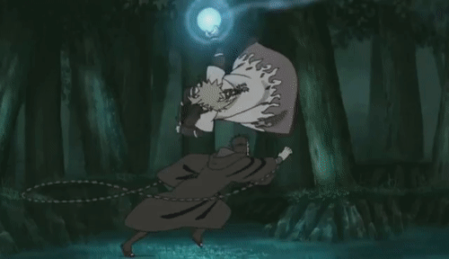
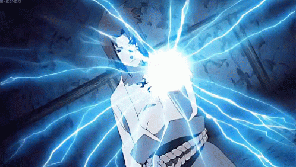

Techniques

Dans le monde de Naruto, il existe le Ninjutsu. Le Ninjutsu est le répertoire de tous les sorts de combat qui ne rentrent pas dans la catégorie du genjutsu ou du taijutsu. Ce répertoire est très vaste, allant de la métamorphose aux invocations en passant par les techniques modifiant l'environnement.
Ces techniques sont répertoriées de cette façon :
-
• Dôjutsu : technique débloquée par l'activation d'une pupille spécifique.
-
• Flux de chakra : technique consistant à recouvrir de chakra des objets ou des personnes.
-
• Fûinjutsu : ensemble des techniques cadenas liées au confinement d'entités dans un réceptacle.
-
• Juinjutsu : technique dite « de sceau maudit » visant à garder une cible sous le contrôle de l'utilisateur.
-
• Ninjutsu de Barrage : ensemble des techniques permettant de créer des barrières magiques.
-
• Ninjutsu d'Espace-Temps : ensemble des techniques de téléportation et de transfert dimensionnel (dont font partie les invocations).
-
• Ninjutsu Médical : ensemble des techniques faisant appel aux connaissances du ninja en médecine et en biologie.
-
• Ninjutsu de Réincarnation : ensemble des techniques outrepassant la frontière entre la vie et la mort.
-
• Nintaijutsu : ensemble des techniques combinant le ninjutsu avec des figures de taijutsu.
-
• Techniques de Clonage : ensemble des sorts de duplication d'objets ou de personnes.
Voici quelques unes de ces techniques :
-
• Rasengan :
 -
• Chidori :
 -
• Technique d'invocation :

-
• Multi-clonage :

-
• Boule de feu suprême :
-
• Dragon aqueux :
-
• Mur de terre :